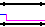
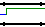
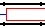
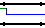
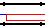
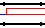
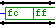

, or by right clicking on a
module and using "
, or by right clicking on a
module and using " Open" and "
Open" and " Close". You can not use the Module List
Close". You can not use the Module List  view to navigate since TkGate can not tell which
instance of a module to open.
view to navigate since TkGate can not tell which
instance of a module to open.
The simulation will be performed with the designated root module at the top-level. The simulator internally expands any module instances in your circuit. While the simulator is active, the Module Hierarchy View
changes to show the hierarchy of module
instances as shown in Figure 5.2. In this
mode, the display shows each instance of each module, rather than
simply one entry per module. The module name for the instance are
shown in angle brackets after the instance name. For example, the
instance "RF" under "eunit" is an instance of a "REG16" module. That
module contains an instance "RF0" of a "ZREG" module, and three
instances "RF1", "RF2" and "RF3" of a "REG4" module. Double clicking
on an instance in this hierarchy view will move the simulator to that
module, and ensure that any probes or signals viewed are for the
instance you selected.
While the simulator is active you must navigate using either the
Module Hierarchy , or by right clicking on a
module and using " Open" and " Close". You can not use the Module List view to navigate since TkGate can not tell which
instance of a module to open.
The simulator console has four tabs with different pages of information. These four pages are:
| Page | Description |
|---|---|
 | Message Page - This page displays messages from the console. Any output from $display or other system tasks generating output will be displayed here. |
 | Breakpoint Page - Displays breakpoints that have been set for the simulation and the status of those breakpoints. |
 | Script Page - Shows the loaded simulation scripts and their status. |
 | Simulation Control Page - Allows you to set options controlling the simulation such as the number of epochs to advance at a time when stepping through a simulation. |
| Button | Description |
|---|---|
 | Run - Enters continuous simulation mode. The simulation will continue as long as there are events in the event queue. If there are any clock gates in your circuit, this will mean the simulation will continue indefinitely. If the circuit is combinational, the simulation will continue until the circuit reaches quiescence. |
 | Pause - Causes a continuously running simulation to stop. |
 | Step - Causes the simulation to advance a fixed number of epochs. The number of epochs to advance can be set on the simulation options menu. You can also invoke this command with the space-bar. |
 | Clock Step - Causes the simulation to advance to the rising edge of a clock. You can set the number of clock cycles to simulate and the number of epochs past the designated cycle to step (to allow time for registers to change value). The default is to trigger on any clock, but you can designate a specific clock in the simulator options menu. You can also invoke this command with the tab key. |
 | Stop - Causes the simulation to be terminated and all probes to be deleted. |
and clock step buttons. Enter the number of
epochs to advance for each press of (or space-bar) into the "Epoch Step Size" box. The clock
step button (or tab) will
advance by the number of clock steps indicated in "Clock Cycle Step
Size", plus an additional number of epochs entered in the "Clock
Overstep" entry.
There is a slight delay between pressing the mouse button and
displaying the value. This is because double clicks on a wire are
used to set probes, so the delay must be long enough to determine that
the mouse press is not a double click. By default, this delay is
333ms (1/3 of a second), but the delay may be changed through the Simulate Options dialog box.
You can slide the range of time displayed in the scope window by using
the scroll bar for coarse changes, or by clicking and dragging in the
trace part of the window for fine grain control. To zoom in, you can
press the left mouse button while holding the shift key, press the '>'
key, or press the  button on the
toolbar. To zoom out, you can press the right mouse button while
holding the shift key, press the '<' key or press the
button on the
toolbar. To zoom out, you can press the right mouse button while
holding the shift key, press the '<' key or press the  button on the toolbar.
button on the toolbar.
| Scope | Description |
|---|---|
|  | 0 - Logic 0 or false (1 bit signals only) |
|  | 1 - Logic 1 or true (1 bit signals only) |
|  | x - Unknown value |
|  | z - Floating or high impedance |
|  | L - Low (the signal is either floating or zero) |
|  | H - High (the signal is either floating or one) |
|  | Data - Data value on a multi-bit wire. |
The time-line on the scope window is displayed as a base value shown in the lower left corner, and an offset value shown along the bottom. In the example shown in Figure 5.4, the base value is 50016916ns (i.e., 0.05 simulated seconds). Each tick mark on the x-axis represents an additional 5000ns past the base time value.
The scope includes a cross hair that follows the mouse whenever it is
in the scope window to help you correlate events across different
traces. You can enable or disable the cross hairs with the  button on the toolbar. The scope
window toolbar also includes some of the same simulation control and
other simulation-related buttons that are on the main TkGate window.
button on the toolbar. The scope
window toolbar also includes some of the same simulation control and
other simulation-related buttons that are on the main TkGate window.
Figure 5.5 shows how the various logic values are displayed in the scope windows. On multi-bit wires, the value of the wire is displayed in hexadecimal, unless the scale is such that there is no room to display the value between when it starts and the next logic transition. In this case, it will first compress the value to a "#", and if there is no room to display that either, no value or symbol will be displayed. The colors used in the scope traces can be configured through the Color Options dialog box.
After you chosen a region, push the  button on the toolbar of the scope window. This will
bring up the Scope Print dialog box having an "Output" and a "Content"
page. The "Output" page of this dialog box is the same as the
"Output" page of the dialog box used to
print circuits.
button on the toolbar of the scope window. This will
bring up the Scope Print dialog box having an "Output" and a "Content"
page. The "Output" page of this dialog box is the same as the
"Output" page of the dialog box used to
print circuits.
If you choose the "Save as Encapsulated Postscript" option, the "Content" page will be disabled, and the selected region of the trace will be written as a single Encapsulated Postscript figure suitable for inclusion in a document (e.g., by Latex).
The "Content" page (Figure 5.7) is divided into a "Range Selection" and a "Scale Selection" portion. The Range Selection portion has a selector to modify the start time of the trace plot, and the range of the selected region in the trace. A diagram showing the total amount of trace data available (in green), and the region selected for printing (in gray) is shown to the right of the selectors.
The "Scale Selection" allows you to set the amount of time to plot per line when generating output. You must be cautious to set this carefully, as too low a setting can result in trace output with a huge number of pages. To help you in setting this value, an estimate of the number of pages needed is displayed next to this selector. The default value for the "Line Length" is one full scale of the scope window at the current zoom setting.

5.4 Setting Breakpoints
Breakpoints can be used to set conditions which will cause a
continuously running simulation to pause. To display the breakpoints,
press the tab on the simulator
console as shown in Figure 5.10. To add a
new breakpoint, press the "Add..." button or double click on the next
empty slot under "Condition". You can enter any valid Verilog
expression as the breakpoint condition. You can edit the expression
of a breakpoint by double clicking on the expression.
Breakpoints will be activated for any non-zero value of their
condition expression. When one of the registered breakpoints is
activated, the simulation will stop, and a  symbol will appear in the "S" column of the breakpoint. Breakpoints
are only triggered on transitions. If you press the button to resume the simulation, the
simulation will continue until the breakpoint expression makes a new
transition to a non-zero value.
symbol will appear in the "S" column of the breakpoint. Breakpoints
are only triggered on transitions. If you press the button to resume the simulation, the
simulation will continue until the breakpoint expression makes a new
transition to a non-zero value.
The "ID" column of the breakpoint list indicates an identifying number for the breakpoint. The column labeled "S" indicates the state of the breakpoint. The state is indicated by one of the following symbols:
| State | Description |
|---|---|
 | Error - There is an error such as a syntax error or undefined variable error in the breakpoint expression. |
 | Go - The breakpoint is active, but has not been tripped. |
| Stop - The breakpoint has tripped, and simulation is stopped at this breakpoint. |
 | Disabled - The breakpoint has been temporarily disabled. |
 | Stand By - The breakpoint is ready and will be active when the simulator starts. |
The "Value" column shows the current value of the breakpoint expression. If the expression is binary, the value will be a 1 or 0, but if it is a multi-bit expression, then it could be an arbitrary value.
There are two buttons to "Enable" and "Disable" a breakpoint. While a
breakpoint is disabled, the breakpoint will remain in the breakpoint
list, but its value will be ignored until you re-enable it.
5.5 Initializing Memories
A circuit can contain one or more memories (ROM and RAM gates). You
can initialize memories from a file, or dump the contents of a memory
to a file. The following toolbar buttons can be used to load or dump
memories.
| Button | Description |
|---|---|
 |
Load Memory - Load memories from the selected file. If a memory gate is selected, that memory will be the default memory to load. If the memory file contains one or more "memory" keywords, the specified memory(ies) will be loaded with the contents of the file. When loading a file, the current directory, the directory of the current circuit file, and the user's home directory will be searched. |
 |
Dump Memory - Dumps the contents of the selected memory to a file. |
A memory file is composed lines that can contain commands, or memory data. Blank lines and lines beginning with '#' are ignored. The supported commands are:
| Command | Description |
|---|---|
| @memory name | Memory data after this line will be loaded into the memory given by name. Name should be the fully qualified Verilog name of the memory comprised of a "." separated list of the modules down to the module in which the memory is located. The "@" for this command only can be omitted, since that is the pre-2.0 style for this command. |
| @radix radix | Specify the radix to use for memory data after this line. The radix can be 2, 8, 10 or 16 with 16 being the default. |
| @addr | Specifies the address at which to begin loading data. The address should be a hexadecimal number. |
Lines that do not contain one of the above commands are assumed to be data in the current radix. For files loaded through the interface, the radix is assumed to be hexadecimal, but can be changed with the @radix command. For files loaded through the Verilog $readmemh system task, the assumed radix is hexadecimal, and for files loaded through the $readmemb system task the assumed radix is binary.
Here is an example of a memory file:
@100 e1 f0 0 0 e1 e0 0 0 81 0 0 0 12 1 bd 0 @200 e 1 e1 d0 dc 7 85 0This file will load 16 bytes starting at address 100, then an additional 8 bytes at address 200 (assuming the memory is declared as an 8-bit wide memory).
Old style memory files use a slash after an address to indicate where to load data. For example:
130/ 2 0 ed 0 60 6 62 6 138/ ed 0 5e 6 1 0 85 0 140/ 81 0 0 0 26 4 69 f0Here the 130, 138 and 140 are the address in hexadecimal. You can use either syntax in your memory files.
In the above examples, there was no explicit mention of the target
memory. For that reason, those file can only be loaded when you
explicitly indicate the target memory either by clicking on before
pressing , or by specifying the
memory as an argument in the $readmemh or $readmemb
system task.
Using the @memory command, you can specify the memory (or memories) to be loaded within the file itself. The memory keyword requires a single argument specifying the name of a memory. For example:
@memory memory.m1 @100 e1 f0 0 0 e1 e0 0 0 81 0 0 0 12 1 bd 0 @memory memory.m2 @100 62 65 61 6b 20 69 73 0aThis memory file will load 16 bytes of data into the memory "m1" in the instance named "memory" which is a sub-module of the root module. It will also load 8 bytes into the memory "m2" in the same module as "m1".
You can also use the "x" and "z" characters in any digit of data values specified in a memory file to indicate unknown or floating values. For example:
@100 10 x 8x 3e z9 3a zx 9xwill load a memory that includes unknown and floating values.
For RAM memories, the contents of the loaded memory are frozen until first time the write line transitions to a stable value (logic 0 or 1). This prevents the data loaded from being destroyed due to unknown values on the write and address lines until the circuit has time to initialize these signals.
In many cases, memory files are initialized to act as microstores or
to contain machine instructions for a user designed processor. In
these cases, it is very tedious and error prone to explicitly specify
the contents of the memory. For this reason, TkGate includes a tool,
gmac, for compiling microcode and macrocode to TkGate-compatible memory
files. Complete documentation on Gmac is
given in a later section of this document.
Simulator script files use Verilog syntax. This section will give
some simple examples of how to write scripts. More detailed
information on Verilog format can be found in the chapter on Verilog Modules.
You can also arrange for simulation scripts to be automatically
executed when you start the simulator by adding one or more simulation
scripts in the circuit options
dialog box.
The "S" column next to each simulator script indicates the state of
the script. The state is one of the following:
5.6 Simulation Scripts
Simulation scripts are useful for setting up a simulation before
starting, or for running a simulation in batch mode. You can perform
most of the operations you can do manually through the interface
including setting and remove probes, changing switch values, loading
memories, setting breakpoints, and stepping the simulator.
5.6.1 Loading Simulator Scripts
To load a simulator script, first press the tab on the simulator console.
You can then press the "Add..." button or double click on the next
empty slot. The default extension for simulation scripts is ".vs".
When loading a file, the current directory, the directory of the
current circuit file, and the user's home directory will be searched.
| State | Description |
|---|---|
| Error - There is an error such as a syntax error or undefined variable error in the script. |
| Go - The script is active and running. |
 | Stop - The script has completed executing. |
| Disabled - Execution of the script is disabled. |
| Stand By - The script is ready and will execute when the simulator is started. |
Most scripts are defined as a Verilog initial block. For example:
initial
begin
$readmemh("test.mem"); // Load memory file "test.mem".
$tkg$probe(a, b, c); // Place probes on the signals a, b and c.
repeat (5) // Advance the simulator 5 steps of the
@ (posedge clock); // clock named 'clock'.
# 10; // Advance the simulator 10 epochs.
$stop; // Stop the simulator and put it in "pause" mode.
end
If you define multiple initial blocks in your script file,
each block will execute in parallel. You can also use always
blocks which execute their bodies in an infinite loop.
You can also define local variables in a simulator script. For example:
integer i;
initial
begin
for (i = 0;i < 10;i = i + 1) // Loop ten times
begin
@ (posedge clock); // Advance to rising edge of "clock".
$display("%t: x=%h",$time,x); // Print time and value of x signal.
end
$stop; // Pause the simulator.
end
This example will step for 10 clock periods and print the value of the
x signal in the simulator console at each of those clock periods.
initial
begin
$tkg$probe(a,b,ci,s,co);
ci = 0; a = 0; b = 0;
#50 ci = 0; a = 0; b = 0;
#50 ci = 0; a = 0; b = 1;
#50 ci = 0; a = 1; b = 0;
#50 ci = 0; a = 1; b = 1;
#50 ci = 1; a = 0; b = 0;
#50 ci = 1; a = 0; b = 1;
#50 ci = 1; a = 1; b = 0;
#50 ci = 1; a = 1; b = 1;
end
Note that the left hand side of each assignment statement is a wire
name. For example, a is used instead of the name of the
switch (g25) to which it is attached. The right-hand side of
assignment statements can be arbitrary expressions referencing
variables declared in the simulation script and any nets in the
design.
You can use fully qualified path names to set the value of switches/nets at levels other than the top level. For example:
top.memctl.ttyreg = 8'h
will set the value of ttyreg in the module instance
memctl which is instantiated in the top-level module.
| Task | Description |
|---|---|
| $display(arg1, arg2, ...) | Display messages to the simulator console. Similar to the C printf in functionality. |
| $readmem(filename [, memory [, start [, stop]]]) | Loads the contents of a memory file to one or more memories. |
| $tkg$probe(sig1, sig2, ...) | Places probes on the specified signals. |
| $tkg$unprobe(sig1, sig2, ...) | Removes probes from the specified signals. |
| $stop | Stop the simulation and put it into "paused" mode. |
| $finish | Terminate the simulation and return to "edit" mode. |
| $random[(seed)] | Return a random number, or set the seed if an argument is given. |
| $time | Return the simulation time in epochs as a 64-bit integer. |
| $tkg$systime | Returns the actual system time in milliseconds since January 1, 1970 as a 64-bit integer. |
reg tempCout; // Declare 1-bit variable for carry out
reg [31:0] tempS; // Declare 32-bit variable for sum
integer i; // Declare index variable
initial
begin
$random($tkg$systime); // Use system clock to set random seed
for (i = 0;i < 10000; i = i + 1) // Loop 10,000 times
begin
a = $random; // Pick random value for A
b = $random; // Pick random value for B
cin = $random; // Pick random value for carry-in
# 50; // Step 50 epochs
tempCout = (33'h0 + a + b + cin) >> 32; // Get correct carry out value
tempS = a + b + cin; // Get correct sum value
//
// If output from the design is not as expected, print an error message
// and stop the simulator.
//
if ({cout,s} != {tempCout,tempS})
begin
$display("error: got 31'h%h + 31'h%h + 31'h%h = {1'h%h, 31'h%h}",a,b,cin,cout,s);
$display(" -- should have gotten {1'h%h, 31'h%h}", tempCout, tempS);
$stop;
end
end
$display("test completed.");
$stop;
end
In the example shown here, the module "ADD32" had an internal port
name of "a", but the name "A" was erroneously used on the interface.
The first error message indicates that the external port name "A" does
not have a corresponding port inside, and the second error message
indicates that the internal port "a", does not have a corresponding
port on the outside.
5.8 Gate Delay Files
Gate delay, area and power (power specifications are not used)
parameters can be specified through a collection of gdf (Gate Delay
File) specification files. The default file "gdf/default.gdf" in the
TkGate home directory is always loaded, but the definitions may be
replaced by loading additional delay files through the Simulate Options dialog box.
Each gate delay file should contain one or more technology blocks having the form:
technology cmos {
...
}
Technology blocks implement a new set of delay parameters and the
specified technology name becomes a name that can be specified as a
technology through the "Delay" page of
the gate properties box. The body of the technology block should
consist of a set of gate primitive declarations. Each gate primitive
should be described in a block defining all the delay and possible
area and power parameters of the block in terms of number of inputs,
bit-widths of inputs and existence of inverters on inputs. For
example, the block for the "mux" primitive might look like:
primitive mux {
delay<I-Z> = (2*(num(S)+1) + 2*num(I)) + 2*(inv(I) || inv(Z));
delay<S-Z> = (2*(num(S)+1) + 2*num(I));
area = bits(Z)*((2*(num(S)+1) + 2*num(I)) + 2*inv(I));
}
The two "delay" lines define the delay from the input to the output
(I-Z) and from the select to the output (S-Z), respectively. The area
line defines the estimated area of the gate. Expressions may include
the C-style operators "+", "-", "*", "/", "&&", "||", "==", "!=", ">", ">=", "<",
"<=", and "!", the "power of" operator "**" and
the functions listed in the table below.
| Function | Description |
|---|---|
| num(p) | Normally, "p" specifies a group of related ports in which case this function returns the number of ports in the group. For example, on an n-input AND gate with inputs I1 through In, the expression num(I) would return n. |
| bits(p) | Returns the number of bits on the specified port. If "p" represents a group of ports, the highest bit-width of the group is returned. |
| inv(p) | When "p" is specific port, a 1 is returned if there is an inverter on the port, 0 otherwise. When "p" specifies a group of ports, the number of ports with inverters is returned. |
| log(expr) | Returns the ceiling of the base-2 log of an expression. |
It is also possible to write procedural delay/area definitions. For example, consider the parameter specification for the "and" primitive.
primitive and {
delay<I-Z> = {
if ((inv(I) == num(I))) // Determine if an inverter is necessary. An
d = inv(Z); // inverter is not required if the output is
else if ((inv(I) == 0)) // inverting and all inputs are non-inverting
d = !inv(Z); // (i.e., it is an AND gate), or if all inputs
else // are inverting and the output is non-inverting
d = 1; // (i.e., it is a NOR gate).
if (num(I) == 1) { // If one input, treat this as a reduction gate
return 2*bits(I0) + 2*d; // one Tr. delay per bit plus inverter delay.
} else { // If multiple inputs, treat this as a normal gate
return 2*num(I) + 2*d; // one Tr. delay per input plus inverter delay.
}
}
area = {
if ((inv(I) == num(I))) // Estimate number of inverters required. If all
d = inv(Z); // inputs are inverted, an inverter is required
else if ((inv(I) == 0)) // iff the output is inverted. If all inputs
d = !inv(Z); // are non-inverted, an inverter is required iff
else // the output is non-inverted. Otherwise we need
d = inv(I); // an inverter for each inverted input.
if (num(I) == 1) { // If one input, treat this as a reduction gate
a = 2*bits(I0) + 2*d; // one Tr. per bit plus inverter Trs.
} else { // If multiple inputs, treat this as a normal gate
a = 2*num(I) + 2*d; // one Tr. per input plus inverter Trs.
}
return bits(Z)*a; // Multiply by number of bit slices.
}
}
In a procedural specification, statements are executed sequentially
until a "return" statement sets the value for the parameter.
C-style if and switch statements may be used in
procedural specifications, but there are no looping constructs.
A technology block need not specify every single primitive type. For example, suppose we have a technology definition for CMOS which includes a definition for a buffer as shown here:
technology CMOS {
primitive buf {
delay<I-Z> = 2 + 2*(inv(I) == inv(Z));
area = bits(Z)*(2 + 2*(inv(I) == inv(Z)));
}
...rest of CMOS definition...
}
We might create a special technology definition "HP_CMOS" which
contains high-power versions of a subset of the standard CMOS gates.
In the example here, we provide a special high-power buffer that has
the delay of a standard buffer, but twice the area (and power).
/*
* A high-power buffer with half the delay and double the area/power.
*/
technology HP_CMOS {
primitive buf {
delay<I-Z> = 1 + (inv(I) == inv(Z));
area = 2*bits(Z)*(2 + 2*(inv(I) == inv(Z)));
}
}
If you assign the technology type HP_CMOS to any gates for which there is no primitive definition, delay values from the technology "default" will be used.
The table below lists all of the primitive gates for which delay may
be specified and their delay parameters. The default values given are
the values for a "basic" gate created from the "Make" with no changes
to the number of inputs, input/output inverters, or bit widths of any
of the ports.
| Gate Type | Parameter | Default | Description |
|---|---|---|---|
| and | I-Z | 6 | Delay from input to output. |
| or | I-Z | 6 | Delay from input to output. |
| xor | I-Z | 8 | Delay from input to output. |
| buf | I-Z | 4 | Delay from input to output. |
| bufif1 | E-Z | 4 | Delay from enable to output. |
| I-Z | 6 | Delay from data input to output. | |
| nmos | I-Z | 2 | Delay from data input to output. |
| G-Z | 1 | Delay from gate to output. | |
| pmos | I-Z | 2 | Delay from data input to output. |
| G-Z | 1 | Delay from gate to output. | |
| add | A/B-S | 68 | Delay from operand input to sum. |
| A/B-CO | 70 | Delay from operand input to carry out. | |
| CI-S | 62 | Delay from carry in to sum. | |
| CI-CO | 64 | Delay from carry in to carry out. | |
| register | setup | 10 | Time before clock edge data-in must be stable. |
| hold | 10 | Time after clock edge data-in must remain stable. | |
| CK-Q | 20 | Time from clock edge until output changes. | |
| mux | S-Z | 8 | Delay from select line to output. |
| I-Z | 8 | Delay from data input to output. | |
| demux | E-Z | 6 | Delay from enable line to output. |
| I-Z | 6 | Delay from data input to output. | |
| mult | A/B-P | 252 | Delay from operand input to output. |
| div | A/B-Q | 236 | Delay from operand input to quotient. |
| A/B-R | 236 | Delay from operand input to remainder. | |
| ram | OE-D | 10 | Delay from output enable to data-out. |
| CS-D | 10 | Delay from chip select to data out. | |
| A-D | 70 | Delay from the address line to the data out. | |
| addr_setup | 10 | Time before write is asserted that address must be stable. | |
| data_setup | 10 | Time before write is asserted that data-in must be stable. | |
| addr_hold | 10 | Time after write is unasserted that address must remain stable. | |
| data_hold | 10 | Time after write is unasserted that data-in must remain stable. | |
| rom | OE-D | 10 | Delay from output enable to data-out. |
| A-D | 50 | Delay from address to data-out. | |
| lshift | S-Z | 16 | Delay from shift select to output. |
| I-Z | 18 | Delay from data-in to output. | |
| rshift | S-Z | 16 | Delay from shift select to output. |
| I-Z | 18 | Delay from data-in to output. | |
| arshift | S-Z | 16 | Delay from shift select to output. |
| I-Z | 18 | Delay from data-in to output. | |
| roll | S-Z | 16 | Delay from shift select to output. |
| I-Z | 18 | Delay from data-in to output. |

{kind=link}
{kind=link}
{kind=link}
{kind=link}
{kind=link}
{kind=link}
{kind=link}